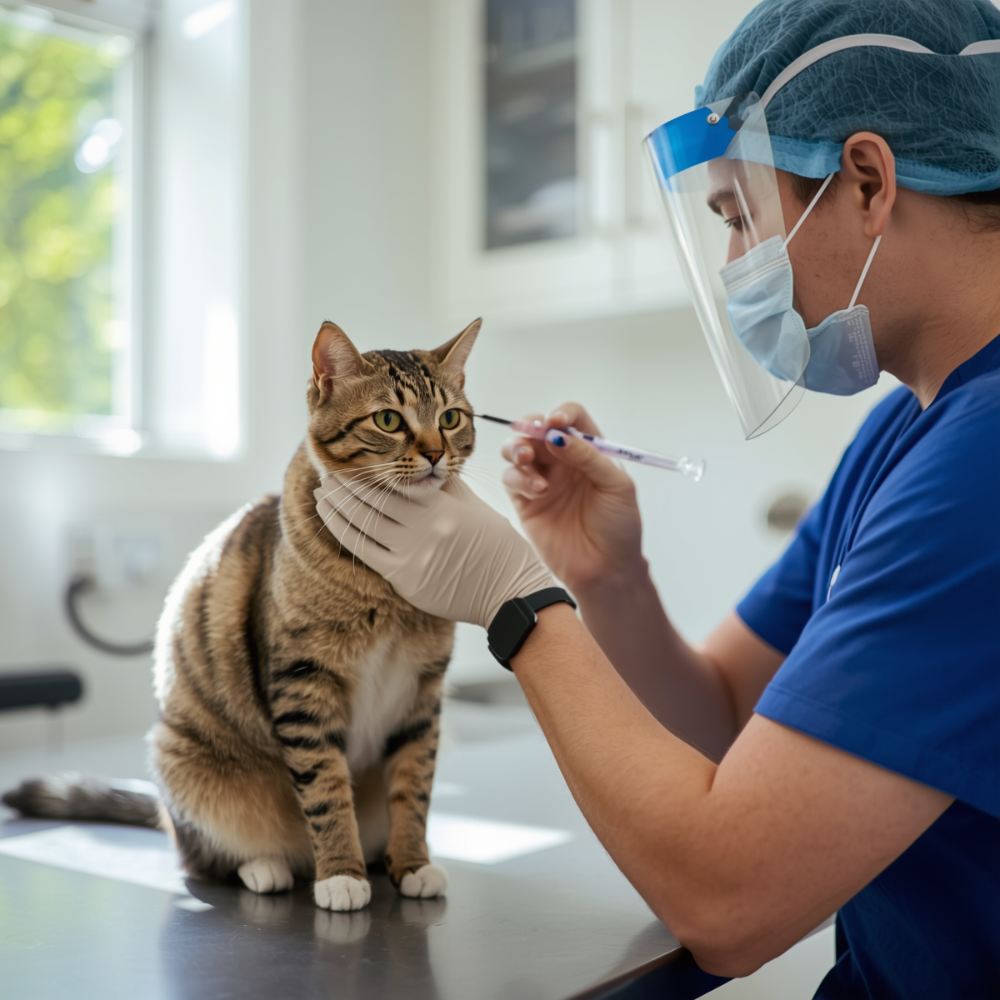
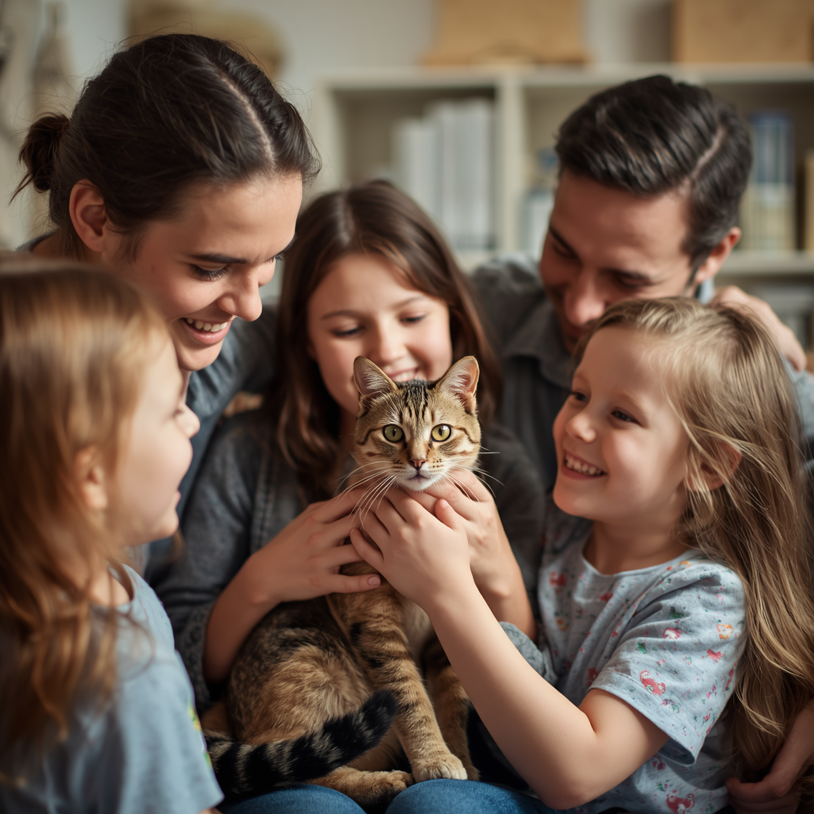
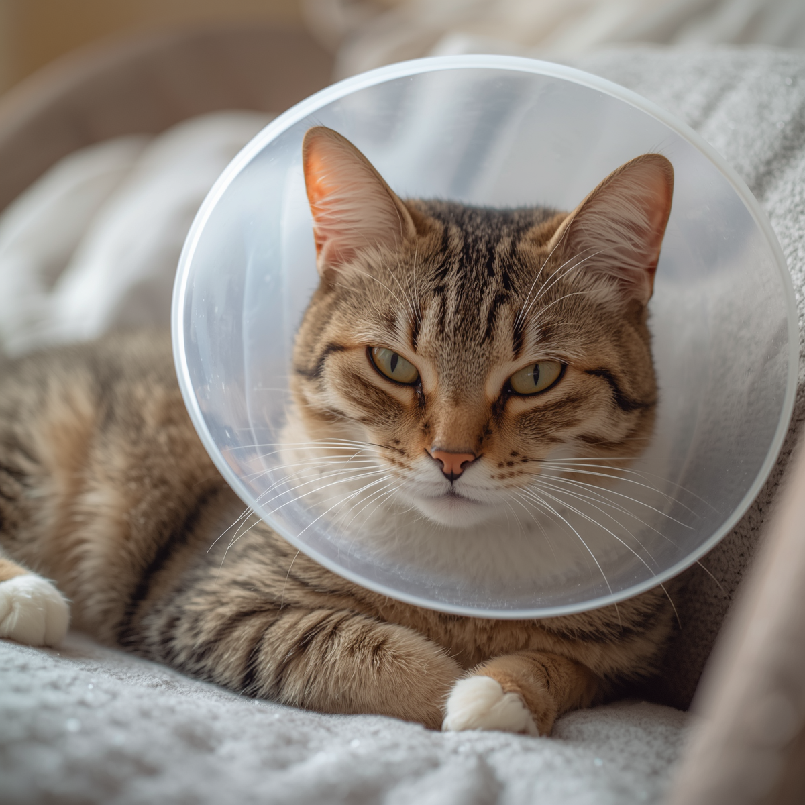

Rescate y adopción
Nos dedicamos al rescate y cuidado de gatos en situación de vulnerabilidad.
Proporcionar un refugio seguro y amoroso a los felinos abandonados, fomentar la educación sobre la tenencia responsablede mascotas y promover la adopción de gatos a través de programas que ayuden a reducir la sobrepoblación animal.
Ir a más informaciónNos dedicamos al rescate y cuidado de gatos en situación de vulnerabilidad.
En Gatitos al Corazón, trabajamos en diversos programas para mejorar la vida de los felinos.

Realizamos programas de vacunación para asegurar la salud de los gatos rescatados y adoptados.

Fomentamos la adopción responsable de gatos para darles un hogar amoroso.

Realizamos campañas de castración para controlar la sobrepoblación felina.